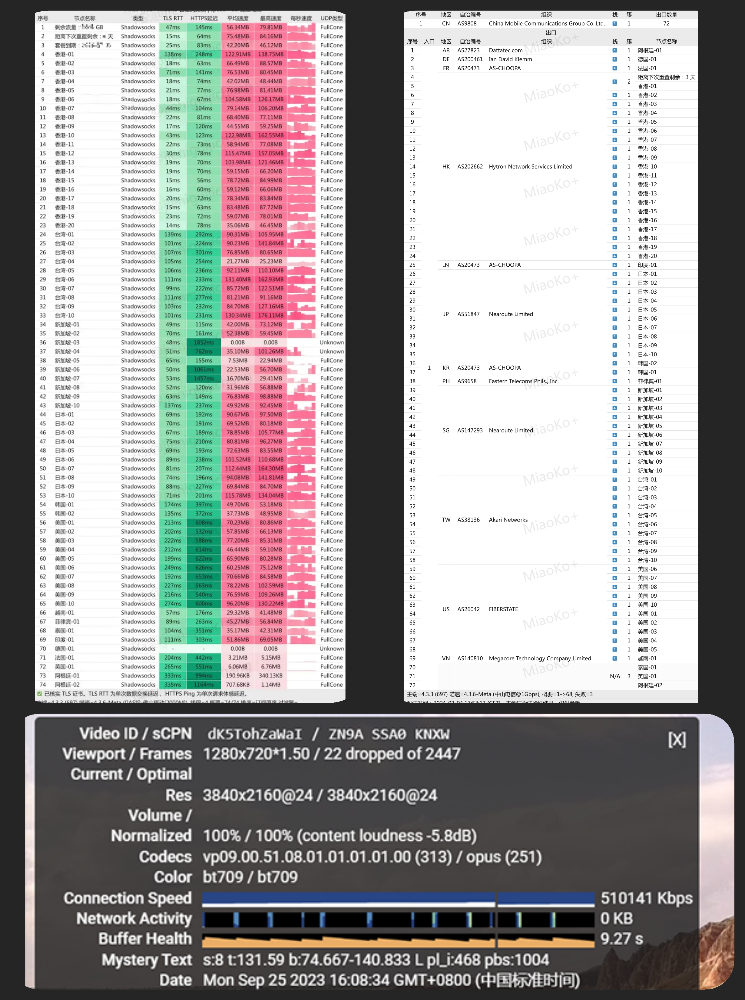

付费机场推荐
感谢您对青云梯的信赖和支持！我们很高兴地宣布，青云梯已经完美运营三周年了！在过去的三年里，我们始终秉承着专业、高效、稳定的服务理念，努力为用户打造畅游全球网络的最佳体验。
青云梯采用IPLC纯专线内网传输线路，拥有最高2.5Gbps速率，确保您在网络使用过程中享受到稳定、高速的连接。覆盖的线路涵盖香港、台湾、日本、新加坡、美国、韩国、越南、菲律宾、泰国、印度、德国、法国、英国、阿根廷等地，所有专线高峰时段不卡顿，让您畅享流畅的网络环境。
我们的所有节点都具有x1倍率，晚高峰时段更是不限速，让您尽情畅享网络资源。青云梯主流节点支持解锁流媒体，包括Netflix、Disney+、HBO、动画疯等，让您随时观看自己喜爱的影视节目。
除此之外，我们还解锁了诸如ChatGPT、Tiktok、NBA、WWE等热门应用，为您提供更广泛的网络体验。我们拥有强大的执行力技术团队和实时在线客服团队，能够及时维护线路并解决您在使用过程中遇到的问题，为您提供全方位的技术支持和服务保障。
在接下来的日子里，我们将继续努力，不断提升服务质量，为您带来更优质的网络体验。再次感谢您选择青云梯，让我们一起畅游全球网络！
青云梯，专业服务，让您畅游全球网络
*此页面为赞助商推广广告（恰饭广告），项目作者可以获得一定利润，支持本项目可以通过此邀请码注册账号，选择套餐购买。
2024年8月18日更新
2024年8月18日更新
青云·诀 (限量热销)
青云·VIP1
¥25 / 月付
流量明细
每月150G流量 ，所有节点x1倍率，晚高峰不限速
线路优势
全IPLC专线，最大提供2.5GBPs速率
流媒体支持
原生IP解锁各大流媒体
套餐优势
解锁 ChatGPT，Tiktok
设备支持
不限制同时使用客户端数量
其他说明
高效客服响应
1年付8折、2年付7折、3年付6折
150GB 周期流量
无限速 速率
青云·VIP2
¥45 / 月付
流量明细
每月300G流量 ，所有节点x1倍率，晚高峰不限速
线路优势
全IPLC专线，最大提供2.5GBPs速率
流媒体支持
原生IP解锁各大流媒体
套餐优势
解锁 ChatGPT，Tiktok
设备支持
不限制同时使用客户端数量
其他说明
高效客服响应
1年付8折、2年付7折、3年付6折
300GB 周期流量
无限速 速率
青云·VIP3
¥85 / 月付
流量明细
每月600G流量 ，所有节点x1倍率，晚高峰不限速
线路优势
全IPLC专线，最大提供2.5GBPs速率
流媒体支持
原生IP解锁各大流媒体
套餐优势
解锁 ChatGPT，Tiktok
设备支持
不限制同时使用客户端数量
其他说明
高效客服响应
1年付8折、2年付7折、3年付6折
600GB 周期流量
无限速 速率
2024年8月18日更新
香港-01